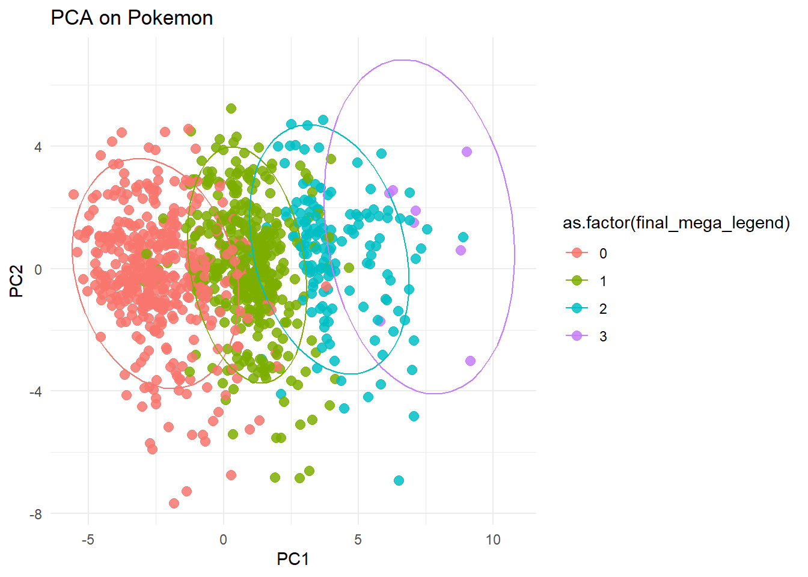
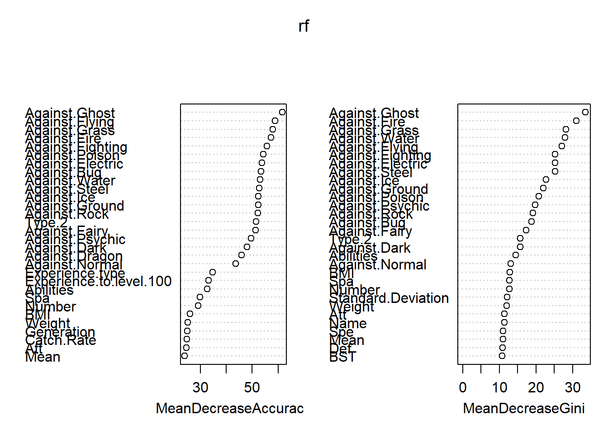

Using a dataset of your choice, create a random forest model and a PCA to answer some questions about the data.
load in libraries:
library(tidyverse)
Warning: package 'tidyverse' was built under R version 4.4.2
Warning: package 'purrr' was built under R version 4.4.2
Warning: package 'lubridate' was built under R version 4.4.2
── Attaching core tidyverse packages ──────────────────────── tidyverse 2.0.0 ──
✔ dplyr 1.1.4 ✔ readr 2.1.5
✔ forcats 1.0.0 ✔ stringr 1.5.1
✔ ggplot2 3.5.1 ✔ tibble 3.2.1
✔ lubridate 1.9.4 ✔ tidyr 1.3.1
✔ purrr 1.0.4
── Conflicts ────────────────────────────────────────── tidyverse_conflicts() ──
✖ dplyr::filter() masks stats::filter()
✖ dplyr::lag() masks stats::lag()
ℹ Use the conflicted package (<http://conflicted.r-lib.org/>) to force all conflicts to become errors
library(ggplot2)library(psych) # Bartlett's test
Warning: package 'psych' was built under R version 4.4.3
Attaching package: 'psych'
The following objects are masked from 'package:ggplot2':
%+%, alpha
library(randomForest) # Random forest
randomForest 4.7-1.2
Type rfNews() to see new features/changes/bug fixes.
Attaching package: 'randomForest'
The following object is masked from 'package:psych':
outlier
The following object is masked from 'package:dplyr':
combine
The following object is masked from 'package:ggplot2':
margin
load in dataset:
# loading in the pokemon dataset:pokemon <-read.csv("All_Pokemon.csv")head(pokemon)
### according to the retain / broken stick test, 2 PCs (PC1 and PC2) should be retained. They explain 0.192 and 0.097 of the variance.scores <-as.data.frame(pca$x)scores$type1 <- pokemon_filt$Type.1scores$bmi <- pokemon_filt$BMIscores$exp_type <- pokemon_filt$Experience.typescores$type2 <- pokemon_filt$Type.2scores$generation <- pokemon_filt$Generationscores$exp_100 <- pokemon_filt$Experience.to.level.100scores$final_evolve <- pokemon_filt$Final.Evolutionscores$legendary <- pokemon_filt$Legendaryscores$mega <- pokemon_filt$Mega.Evolutionscores$final_mega_legend <- pokemon_filt$Mega.Evolution + pokemon_filt$Legendary + pokemon_filt$Final.Evolutionplt <-ggplot(scores, aes(PC1, PC2, color =as.factor(final_mega_legend))) +geom_point(size =2.6, alpha =0.85) +theme_minimal() +labs(title ="PCA on Pokemon")plt +stat_ellipse() # 95% CI

### When I colored by just final_evolve, legendary, or mega, I got good separation on PC1. I then decided to look at all three of these groups combined, which gives separation on PC1 in four groups.man1 <-manova(cbind(PC1, PC2) ~ final_mega_legend, data = scores)man2 <-manova(cbind(PC1, PC2) ~ final_evolve, data = scores)man3 <-manova(cbind(PC1, PC2) ~ legendary, data = scores)man4 <-manova(cbind(PC1, PC2) ~ mega, data = scores)summary(man1, test ="Pillai")
Df Pillai approx F num Df den Df Pr(>F)
mega 1 0.12085 70.655 2 1028 < 2.2e-16 ***
Residuals 1029
---
Signif. codes: 0 '***' 0.001 '**' 0.01 '*' 0.05 '.' 0.1 ' ' 1
# All of these groups are significant.pc12rot <-abs(pca$rotation[,1:2]) |>as.data.frame() colnames(pc12rot)[1] <-"PC1"colnames(pc12rot)[2] <-"PC2"pc12rot |>arrange(desc(PC1)) |>head()
PC1 PC2
BST 0.3558083 0.043382955
Mean 0.3558083 0.043382955
Final.Evolution 0.2774181 0.055827435
Att 0.2693672 0.001113677
Catch.Rate 0.2605083 0.043558560
Spa 0.2565422 0.095370614
# BST and Mean contribute the most to PC1pc12rot |>arrange(desc(PC2)) |>head()
# OOB = 8.6%# Based on my confusion matrix, the model was pretty good at classifying different types for the most part. Almost all columns had at least 1 misclassification. It did seem to have a hard time predicting ice, flying, and dragon types, most likely because there are low counts of these types.varImpPlot(rf)

# The variables that held the most importance in mean decrease accuracy were Against.Ghost, Against.Grass, and Against.Fire, while the variaables that held the most importance in mean decrease Gini were Against.Fire, Against.Ghost, and Against.Grass.
Summary:
The two models disagreed on variable importance. It was very interesting with how I had to sort of search each individual variable to discover the structure of the data with PCA, while random forest seemed to be able to run on its own to make predictions.